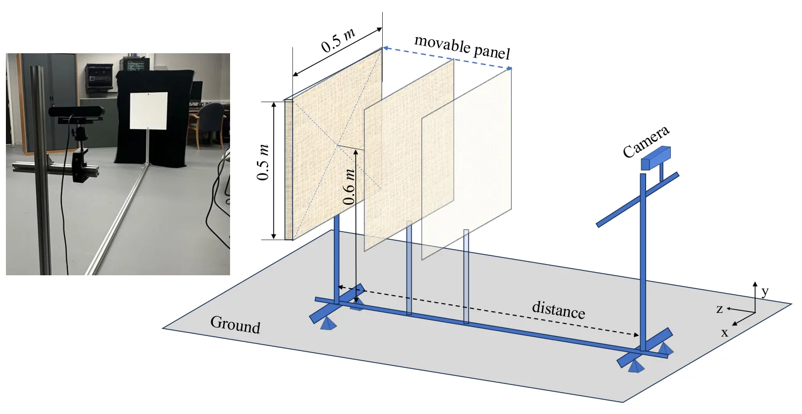
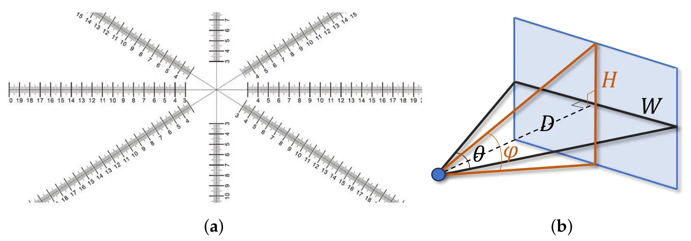
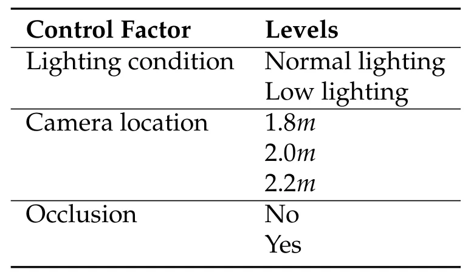

室内 healthcare monitoring 相机评测协议与验证Evaluation Protocols and Validation for Cameras in Indoor Healthcare Monitoring
不是 SLAM 主线，但对室内 RGB-D 传感器选型、深度误差理解和 3D 重建 benchmark 设计有工程价值。
一句话工作总结
系统验证多款 RGB/RGB-D 相机在室内医疗监测场景中的深度、2D pose 和 3D reconstruction 表现，给出设备选择依据。
摘要
相机监测系统越来越多用于医疗和家庭环境中的人体活动连续评估，但真实室内条件下设备计量性能与算法表现缺少系统验证。本文提出两个技术验证协议：一是评估 RGB/RGB-D 相机计量性能，二是评估其对人体姿态估计的支持。实验覆盖 5 款相机、照明变化、相机高度、视角和遮挡等因素，并结合 SOTA pose estimators。结果显示不同设备深度偏置差异很大：5 m 处从约 50 mm 到超过 1400 mm；2D pose mAP 大致在 78%–90%，但 3D reconstruction MPJPE 从 104 mm 到 365 mm，强烈反映底层深度质量。
Camera-based monitoring systems are increasingly adopted in healthcare settings for the continuous assessment of patient movement and activities. However, their technical performance under real-world indoor conditions remains insufficiently characterised, preventing appropriate camera selection for clinical or home adoption and reproducibility. Existing validation studies typically assess either device metrological performance or algorithm accuracy in isolation, and often do not systematically account for practical deployment factors, such as lighting variability, occlusions, and camera positioning. We present two technical validation protocols: the first evaluates the metrological performance of RGB and RGB-D cameras, and the second assesses their use in supporting human pose estimation, validated using state-of-the-art pose estimators. The proposed protocols systematically assess five cameras, four RGB-D and one RGB, under controlled variations in lighting, camera height, viewing angle, and occlusion level within representative indoor scenarios. The experimental results show that metrological performance varies substantially across cameras, with depth bias at 5 m ranging from 50 mm to over 1400 mm depending on the device. For 2D pose estimation, all cameras achieve broadly comparable accuracy, with mean mAP between approximately 78% and 90% across cameras and estimators, whereas 3D reconstruction error differs markedly across devices, with MPJPE ranging from 104 mm to 365 mm, closely reflecting underlying depth-sensing quality. Environmental factors have a camera- and estimator-dependent effect on 3D performance, while camera mounting height has minimal influence within the evaluated range. This work provides evidence-based guidance for the selection and deployment of cameras in healthcare monitoring applications, addressing an important gap in current technical validation practice.
中文解读摘录
- 英文题名：SA-LIVO: Efficient LiDAR-Inertial-Visual Odometry with Subspace-Aware Degeneracy Handling
- 作者：Yinong Cao, Xin He, Yuwei Chen, Shijie Liu, Chunlai Li, Jianyu Wang
- 类别/来源：cs.RO；20 pages, 12 figures, 5 tables；采集 score=15；阅读优先级=9.2/10。
- 一句话总结：在同一个 InEKF 优化环内对 LiDAR-visual 信息矩阵做特征分解，按可观测方向选择性融合视觉约束，让视觉主要补偿 LiDAR 退化方向而不干扰已约束方向。
- 为什么值得看：这篇非常贴近实际 LIVO 系统痛点：LiDAR 在走廊、平面、重复结构中退化，视觉又会受光照/纹理影响。SAIF 的“按 eigendirection 线性夹紧软门控”比传统 modality-level gating 更细粒度；摘要还声称视觉 Jacobian 可在迭代外复用，带来 12.3 ms/frame laptop CPU、26.8 ms/frame embedded ARM 且峰值内存降低 3.6–6.3x。后续应重点复核退化方向判定阈值、和 FAST-LIO/LIO-SAM/视觉直接法基线的公平性，以及代码开源进度。
- 标签：LIVO、LiDAR 退化、子空间融合、InEKF
- 链接：abs / PDF
图表/页面预览

{kind=link}

{kind=link}

{kind=link}
